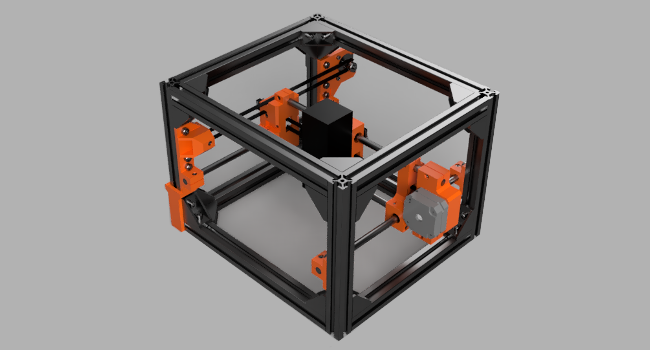
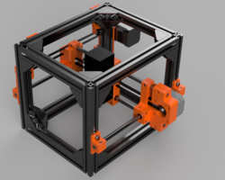
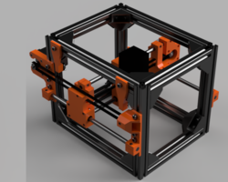
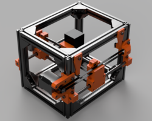
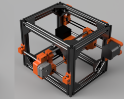

Engravinator
An open source laser engraver
The Engravinator is a laser engraver designed as an open source project with all the designs, builds and instructions available for free.
Instead of being a laser engraver where you bring the piece to the engraver, we are designing the Engravinator to be an engraver that you bring to your work piece. For example, if you are building a large piece of furniture, you would clamp the Engravinator down to your work piece to engrave your maker's mark.
Currently, we are in the design and prototyping phase of the project and will update this site, our GitHub repository and our Twitter account with our progress.